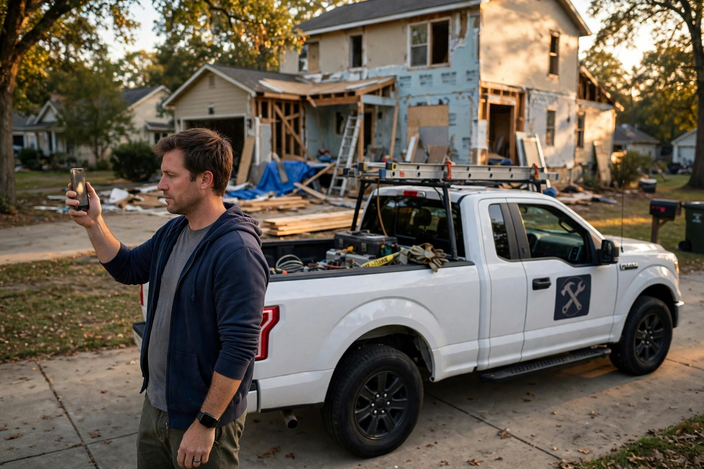

79,000 Businesses in California Advertise Construction Work With No License. Checking Yours Takes 90 Seconds.

On a Tuesday in March, a homeowner in Roseville signed a $38,000 kitchen contract with a man whose truck had a license number stenciled on the door. The card showed a seven-digit license number. Seven digits feels official. Nobody checked it.
By May the kitchen was half demo, the cabinets were in a storage unit nobody had the key to, and the man was not answering his phone. That number on the door belonged to a license that had expired in 2019. There was no bond to claim against, no workers' comp policy, and no license for the Contractors State License Board to suspend, which meant the complaint the homeowner eventually filed landed in the unlicensed pile, where it joined about 20,000 others that year.
I have watched this exact sequence play out more times than I can count, and it never starts with a villain, just a homeowner who skipped a 90-second check. Demo is always the fastest part. The recovery is the part that never ends.
Enforcement by the numbers
On September 3, 2026, the CSLB's own staff told the board something the industry has known for years but rarely says out loud: an analytical study estimated more than 70,000 individuals are doing construction work in California without a license, and roughly 79,000 businesses are advertising construction services with no matching CSLB license on file (CSLB board meeting summary, September 3, 2026). Staff matched complaint files, city business-license records, and statewide employer data with string standardization and fuzzy matching at 95 to 99 percent confidence, and the board authorized a five-step response while asking IT to build an API so cities can share business-license data directly.
Now run the enforcement math against those numbers, because nobody at the meeting said this part. About 400 CSLB staff regulate 231,000 active licensed contractors plus the unlicensed population, across 164,000 square miles (Future of California, underground economy analysis). In calendar year 2023 the board closed 21,406 complaint investigations, producing 3,833 legal actions and more than $40 million in consumer restitution. Undercover sweep teams ran 217 stings across 43 counties in the first seven months of 2024, opening 969 complaints and issuing 704 actions.
Twenty-one thousand investigations sounds like a lot until you divide. Even if every single 2023 investigation had targeted an unlicensed operator, and the real number is far lower since licensed contractors file the bulk of complaints, that is about 31 percent of the estimated unlicensed population in a year, and the honest figure, the one nobody says on the record, is a single-digit percentage. Nobody from the state is coming to find your unlicensed contractor. You are the entire enforcement apparatus on your project. Ninety seconds of checking, or nobody checks at all.
What the law promises, and what it pays
In California, unlicensed contracting is a misdemeanor, and the penalties stack up fast on paper. A first conviction carries up to a $5,000 fine and six months in county jail. A second brings a mandatory fine of 20 percent of the contract price, or $5,000, whichever is greater, plus at least 90 days in jail (Cal. Bus. & Prof. Code §7028). Civil penalties run $200 to $5,000 for a §7028 violation, up to $15,000 for the aggravated §7028.7 version (CSLB approved civil penalty schedule).
Those numbers look serious on paper. In practice, almost never. Most district attorneys treat unlicensed contracting as a low-priority offense, and a first citation usually lands far below the statutory cap, which means for an operator pulling in $50,000 to $100,000 a year in unreported income, the fine functions as a minor cost of doing business, like a parking ticket for a delivery fleet.
Then there is the bond, which is the number I want homeowners to actually understand. Every licensed California contractor must carry a $15,000 contractor's bond, and the aggregate liability of the surety on consumer claims is capped at $7,500 (SB 465, amending B&P §7071.6). Against the median home-improvement scam loss of $1,800, that cap is fine. Against the average new-home-construction fraud loss in Utah, which ran $302,000 per consumer over three years, the bond covers about 2.5 percent of the damage, which makes a bond a tripwire rather than a safety net: it tells you the contractor went through licensing, but it does not make you whole. (Utah Dept. of Commerce, 2025).
What the losses look like
The BBB tracked 81,925 home-improvement scams reported by U.S. consumers in 2024, with a median loss of $1,800, making it the fourth-costliest of 27 scam categories. Nearly one in ten Americans has experienced a home-improvement scam (Stacker/PeopleFinders, 2026). Utah logged $32 million in construction fraud losses over three years and stood up a dedicated task force plus the state's first full-time construction-fraud prosecutor (Utah Dept. of Commerce, 2025). In 2025 the FBI's Internet Crime Complaint Center put real-estate fraud at $275.1 million, up from $173 million the year before (RISMedia, April 2026).
Those are the reported losses, and nobody knows the unreported ones, because the people who get taken by an unlicensed operator often never file anything. They have no bond to claim, no license to complain about, and a contractor whose real name they are not sure of. Those statistics measure the visible part of the iceberg and call it the ocean, because the homeowners who lose the most are the ones least likely to file anything at all.
Your 90-second protocol
Here is the part that drives me quietly insane after twenty years of watching projects go sideways: the check that prevents all of this takes 90 seconds, costs nothing, and here is the whole procedure.
First: the license number, in writing, before anything else happens. Then open the CSLB's instant license lookup and type it in. Confirm three things: the status reads Active, the classification matches the work (B for general building, C-10 for electrical, C-36 for plumbing), and the bond and workers' comp entries are current. A general building contractor cannot legally do your electrical panel upgrade, and a suspended license, which the lookup flags right next to the status field, is the same as no license.
Second: Google the number itself. Borrowed and expired numbers are a known dodge, so if the number resolves to a different business name than the one on the truck, you have your answer.
Third: the deposit test. This is where California law does the heavy lifting for you. California caps home-improvement down payments at $1,000 or 10 percent of the contract price, whichever is less, and bars contractors from collecting payment ahead of the value of work performed (B&P §7159.5(a)(3), (a)(5)). Anyone demanding half down on a $40,000 kitchen is either unlicensed or auditioning to become someone else's cautionary tale. That payment schedule goes in the written contract, in dollars and cents, tied to milestones.
Fourth: a watchlist, because licenses expire mid-project and insurance lapses right alongside them. Credential-verification platforms like ContractorCREDS, which covers 155,000 contractors across 36 states, send alerts when a license expires, insurance lapses, or a board complaint lands (ContractorCREDS announcement). An open-source project called ShieldGuard AI goes further, cross-checking licenses, auditing quotes against market averages, and screening for lawsuits (ShieldGuard AI, GitHub). CSLB's own September plan calls for the same idea at the government level: automated data matching and an API for city business-license feeds.
An uncomfortable footnote
Now the part the industry does not put on the brochure: a license is not a competence certificate, which is why licensed contractors generated 9,317 complaints in fiscal year 2024-25 while the board's intake staff recovered $11.7 million in restitution from licensees, not ghosts (CSLB Enforcement Committee minutes, April 11, 2025).
It gets worse, because the public lookup itself is sanitized: when a contractor settles with an unhappy customer for cash, the CSLB does not investigate, and uninvestigated complaints never appear on the public record. NBC Bay Area found the board closed at least 10,719 complaints without investigation between 2020 and 2024 (Moneywise/NBC Bay Area). Against Anchored Tiny Homes, a licensed company that took deposits and dropped projects, the public lookup showed 10 complaints, while the board had received roughly 259.
So a clean lookup means "no investigated complaints," not "no complaints." Jobs under $1,000 are legal without a license in California, and plenty of good handymen work unlicensed within that line. A 90-second check shrinks your tail risk, but it does not certify craftsmanship, it does not predict whether the tile lines will be straight, and it does not replace the harder work of checking references and reading a contract like your money depends on it, because it does.
What we did not prove
The 70,000 and 79,000 figures come from fuzzy matching at 95 to 99 percent confidence, and the board itself flagged the risk of false positives and undercounts. BBB and FBI figures rest on self-reported complaints; the unreported fraud is unmeasurable by definition. ContractorCREDS's 155,000-contractor figure is vendor-reported and independently unverified. No published study measures whether instant-lookup tools or AI vetting platforms actually reduce homeowner victimization rates, so the claim that running the check helps is inference from the enforcement gap, not a measured outcome. And California's data does not generalize: licensing regimes vary wildly by state, and several states barely license residential contractors at all.
Day zero
Every project I have ever run has a critical path, and the license check sits at day zero of every one of them. It is the cheapest task on the schedule, takes a minute and a half, and requires no permit, no deposit, and no contractor's cooperation beyond the number he is legally required to put on everything he hands you.
Roseville's kitchen is finished now, by the way, rebuilt by a second contractor who was licensed, verified, and more expensive. This time the homeowner ran the 90-second check. Everyone runs it the second time. The trick is doing it the first time, before the demo, before the deposit, before the number on the truck door becomes the most expensive line item on the job.